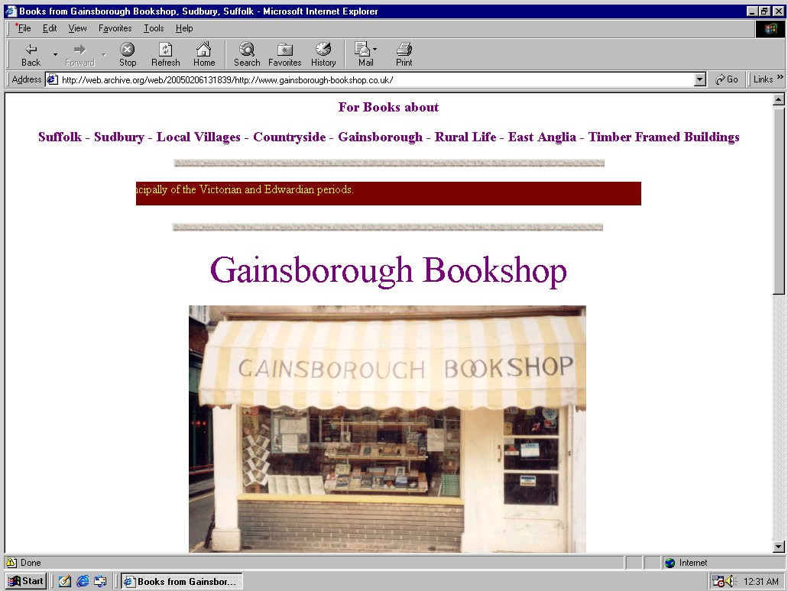

Home | The Original Website | History of the Shop | Dick Oldershaw | About/Contact
The original Gainsborough Bookshop website was first archived by the Internet Archive's Wayback Machine in November 2000. The Wayback Machine's page for gainsborough-bookshop.co.uk shows that it was saved 43 times between November 2000 and June 2007.

The page was originally designed and created by (if memory serves) Tim Richmond, a family friend and employee of the shop. Analysis of the source code shows that it was created using Word 97.